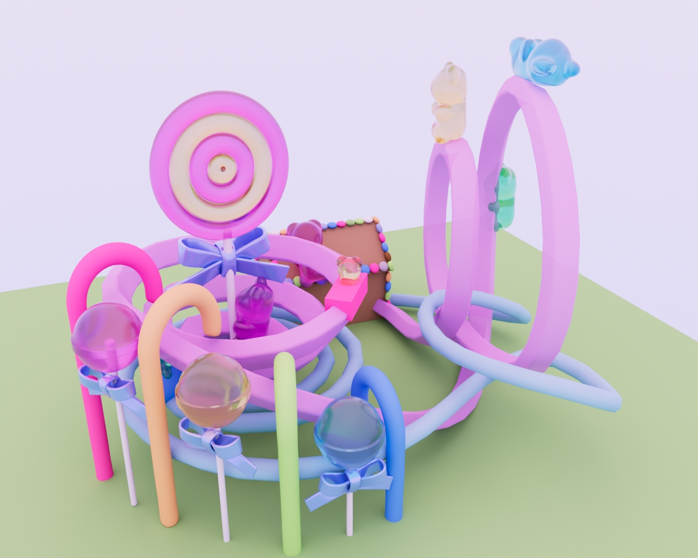
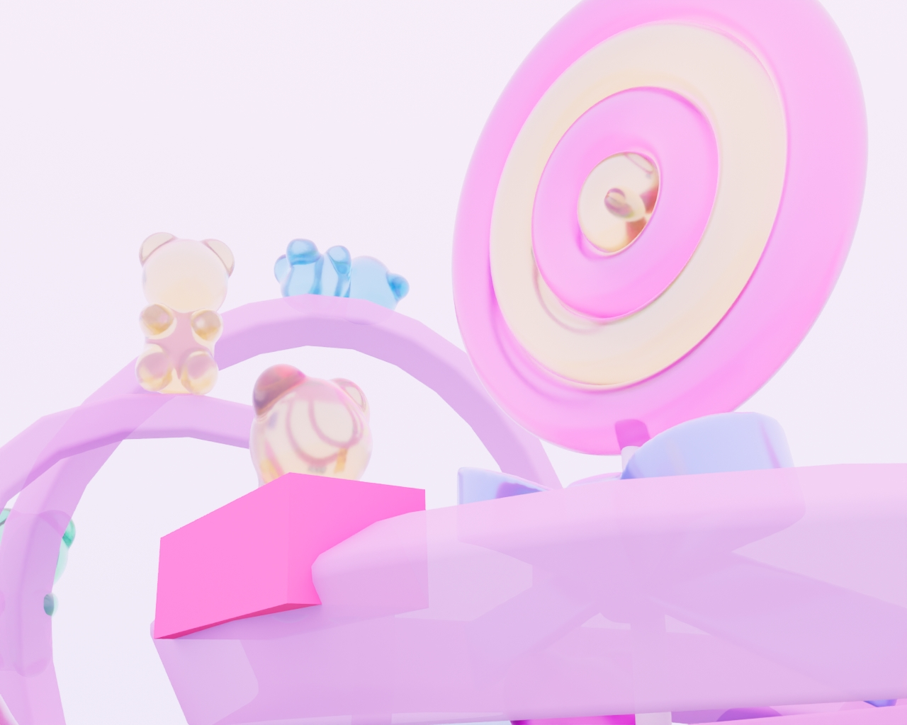
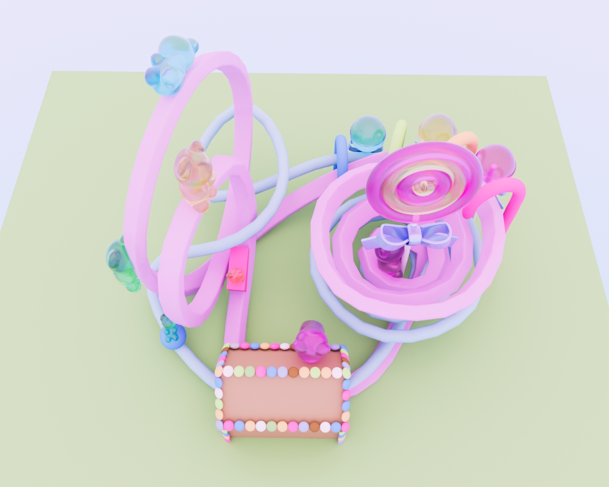
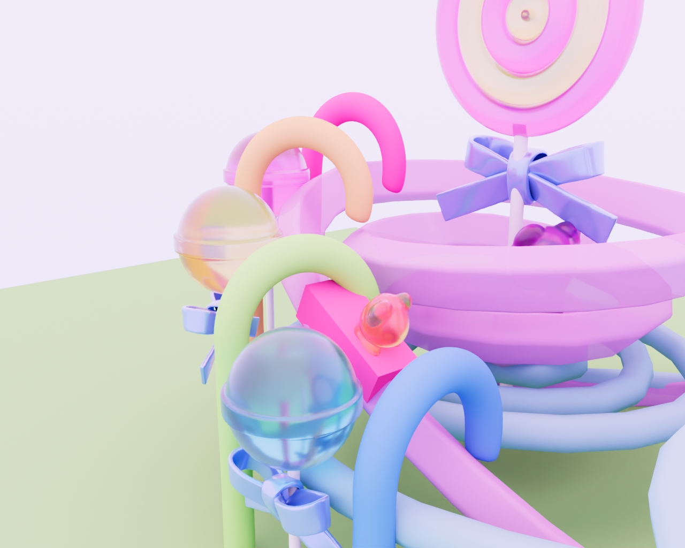

The intentional Candy Land aesthetic frames this project, subverting the intimidating nature of data collection by offering a fun, engaging, and non-judgmental experience.

Ambiguous metrics like emotional disparity and physical tension are captured via an interactive instrument and directly translated into the physics of the rollercoaster track.

The resulting course is a unique, three-dimensional portrait of the user’s subjective data, charting their inner balance or conflict through exhilarating inversions and accelerations.

This experience functions as a personalized, therapeutic narrative received in exchange for conscious emotional data.